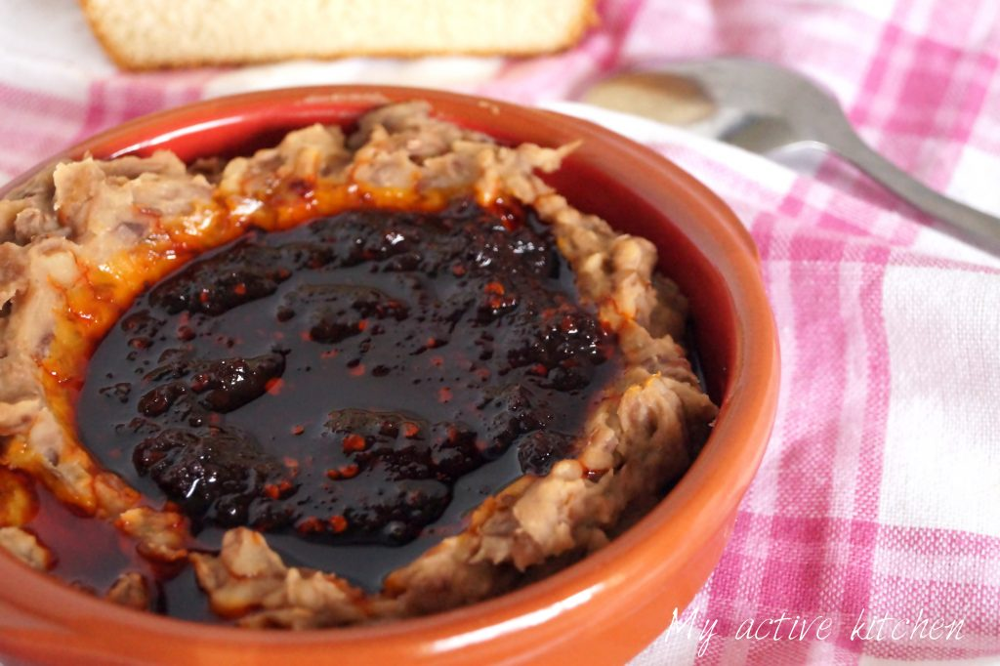

Ewa Aganyin Sauce

Ewa Aganyin
Come Along ...
Redo the Ingredients and Steps.
Ingredients
- Cup of dried crushed chilies/peppers (Sanbo gbigbe) soaked in warm water for about 3 hours
- dried bell pepper (Tatase gbigbe)
- regular red bell pepper (Tatase)
- Onions
- Seasoning cube
- Salt to taste
- Cups palm oil
- Beans/black-eyed peas
Steps
- Drain soaked crushed chillies and blend with 3 onions to a purée.
- Place a clean/dry pan on a medium high heat, pour in palm oil and bleach.
- add the half chopped onions and continue frying till onion is brown but not burnt.
- Add blended pepper and cook on a low heat,
once pepper mixture start changing colour from bright red to brownish.
- Add salt and seasoning to taste.
- Continue to cook on low heat till oil floats on the top.